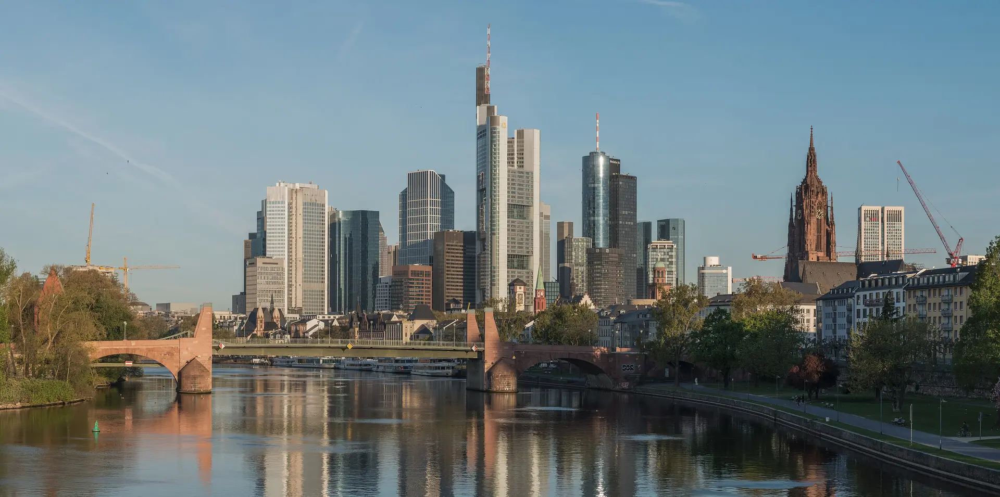
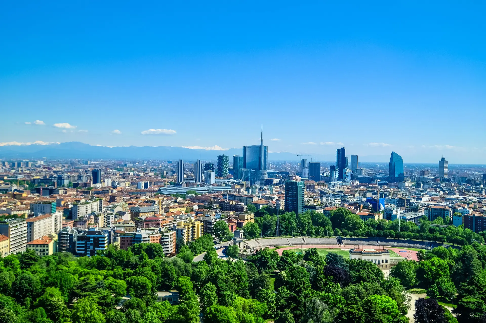
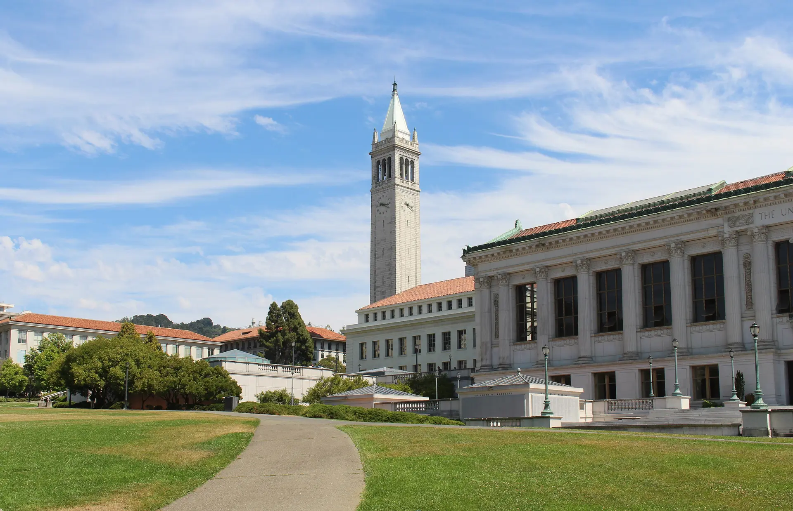

Anwälte, die selbst gegründet haben
Studium in Frankfurt und Mailand, Promotion in Berkeley und Oxford, über fünf Jahre Großkanzlei. Dann, 2012, das eigene Unternehmen.
- Gegründet
- 2012, B2B-Software
- Exit
- Verkauf an einen US-Wettbewerber
- Zulassung
- Rechtsanwälte in Deutschland
- Sitz
- Genua, Italien
Bis hierhin ähnelten sich unsere Lebensläufe denen unserer Kollegen. Dann änderte sich etwas.
Wir studierten in Frankfurt am Main und Mailand. In Berkeley und Oxford promovierten wir zu Themen der Corporate Governance und Unternehmensfinanzierung.
Während der juristischen Ausbildung und als Berufseinsteiger sammelten wir über fünf Jahre Erfahrung in internationalen Großkanzleien. Bis dahin sahen unsere Lebensläufe aus wie die vieler Anwälte. Im Jahr 2012 gründeten wir selbst.
Fünf Orte, ein Weg
Von den Hörsälen in Frankfurt bis zur Kanzlei über dem Hafen von Genua.
-

Frankfurt am Main: Studium der Rechtswissenschaften
Hier hat unser Weg begonnen. Heute sind wir bei der Rechtsanwaltskammer Frankfurt am Main zugelassen.
-

Mailand: Studium in Italien
Das zweite Rechtssystem, das wir von innen kennen. Italien ist bis heute der Sitz der Kanzlei.
-

Berkeley: Promotion in Kalifornien
Doktorarbeiten zu Corporate Governance und Unternehmensfinanzierung, an zwei der bekanntesten Universitäten der Welt.
-
Oxford: Promotion in England
Dieselben Themen aus einem anderen Rechtskreis. Danach über fünf Jahre in internationalen Großkanzleien.
-

Genua: Der Sitz der Kanzlei
Via Corsica 15, über dem Hafen. Von hier beraten wir Unternehmer, zugelassen in Deutschland.
2012
Wir gründeten ein B2B-Software-Startup und führten es als Geschäftsführer durch Gründung, Skalierung und Internationalisierung bis zum Verkauf an einen US-Wettbewerber. Diese Erfahrung steckt in jeder Beratung.